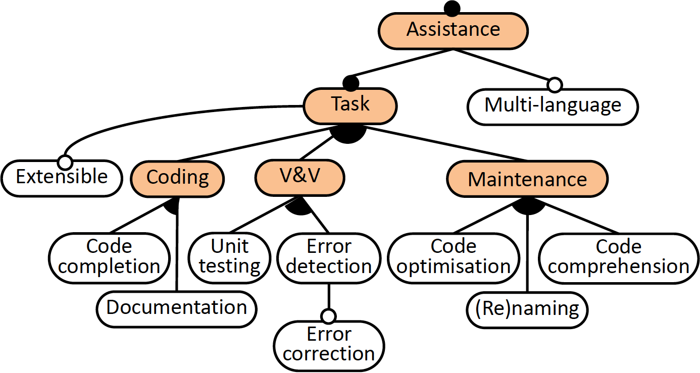
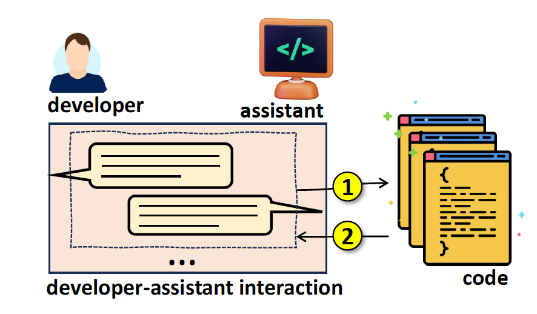

Tool Support
– Code completion: CARET is able to create a new project with the given name, a new
class or interface with the given name in the current project, a class implementing a
given interface, or a subclass of a given abstract class. It can also generate the code
of a method, for which the user must provide either a description of the method, or
the method name and its parameters.
– Documentation: It generates the Javadoc comments for a complete Java file. If the
user does not provide a file but a code fragment, it can generate either Javadoc
comments or line-by-line comments for the code.
– Unit testing: It creates a JUnit test for a given class.
– Error detection and correction: It can help detect simple semantic errors and propose
corrections. Both functionalities rely solely on GPT (i.e., the assistant does
not integrate analysis or error detection/fix methods developed ad-hoc for Java).
– Code optimisation: CARET provides four optimisation options for a selected code
fragment: efficiency improvement, readability improvement, complexity reduction,
or general optimisation.
– Code comprehension: It produces an explanation in natural language of a selected
piece of code.
– Method (re)naming: It renames a method to reflect its

Tracebility
